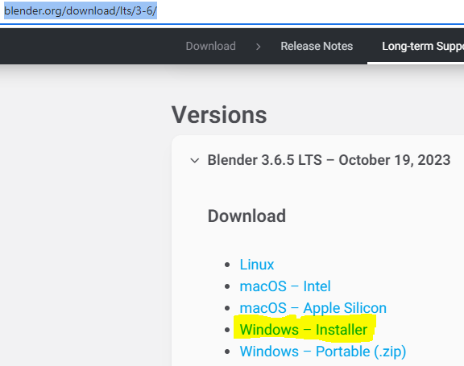
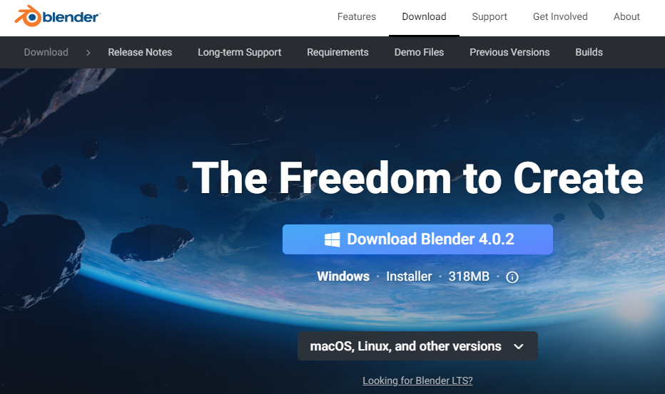

Installation and configuration of Blender
Warning
While you see this note, is recomended to use Blender-3.6.5 since Blender-4 is still unstable. You can get it from here: Blender 3.6.5
1.- Go to https://www.blender.org/download/ , download the latest version of Blender and install it
- 2.- Download Fast64
Go to the Fast64 repository
Click in the green button where it says “< > Code”
Click where it says “Download ZIP”
3.- Open blender and click in General as higlighted in the image
Note
You can click in the Windows icon and search for it typing “blender”
- 4.- Import Fast64 in Blender
Go to the upper-left corner and click on Edit
From the list, click on the last option ⚙️ Preferences…
Go to the Add-ons section in the new window
Click on Instal… in the upper-right corner of the window
Select the Fast64 zip file we downloaded earlier
Click in the bottom-right blue button called Install Add-on
- 5.- Enable Fast64 and Magic UV Add-ons
Open Blender preferences window and go to the Add-ons section again
In the upper-right section, click in the blank space at the right of the lens
Write fast
Click in the Import-Export: Fast64 checkbox
Click again in the search box and type magic
Click in the UV: Magic UV checkbox
- 6.- Clean the default blender scene
Look at the top-right section of blender. Where it says in a list: Scene collection -> Collection -> Camera…
Select everything there and press Supr key (You also can Right click and then click on Delete)
- 7.- Configure Fast64 Add-on
In Blender, press N to show (and hide) the tools submenu at the right
Click on the Fast64 submenu and change Game from “SM64” (Super Mario 64) to “OOT” (Ocarina of Time)
Now click on the OOT submenu and put the Ubuntu oot moding path in the Decomp path section
Note
- You can get your Ubuntu oot moding path by:
Opening Ubuntu and going to the OOT/oot folder:
cd OOT/ootTyping
explorer.exe .to open that path with the Windows explorerClcking on the path on the top side of the window
8.- Save this configuration
To save this configuration you can do 2 things:
- Save a project and use it to open Blender when you want to do oot stuff
Click on File in the upper-left corner of Blender
Click on Save As…
Save it in a comfortable location (Desktop for example) with a name similar to “oot_base”
Repeat the proccess and save it again with a name similar to “oot_base_backup” (Just in case you open oot_base and save over it without noticing, you still have the backup)
Next time you want to open blender to do oot moding stuff, open “oot_base.blend”
- Save this configuration as default so Blender will always open with the current state
Click on File in the upper-left corner of Blender
Hover Defaults at the bottom of the dropdown
Click on Save Startup File
Click again on Save Startup File
Next time you open blender, you will have every configured